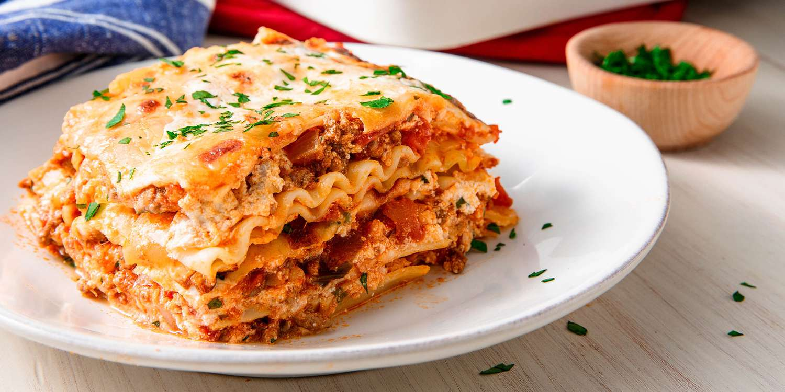

World's Best Lasagna

Description
When John Chandler submitted this lasagna recipe to Allrecipes more than 20 years ago, he had no idea how successful it would become. One of our top-performing recipes of all time, World's Best Lasagna racks up more than 7 million views per year and has ranked among the most popular lasagna recipes on the internet for two decades. Unfortunately, John unexpectedly passed away at 53 years old — read all about his life and legacy here.
Make our most popular lasagna today to find out what all the fuss is about!
Ingredients
- Meat: This super meaty lasagna has sweet Italian sausage and lean ground beef.
- Onion and garlic: An onion and two cloves of garlic are cooked with the meat to add tons of flavor.
- Tomato products: You'll need a can of crushed tomatoes, two cans of tomato sauce, and two cans of tomato paste.
- Sugar: Two tablespoons of white sugar add subtle sweetness and enhance the flavor of the sauce.
- Spices and seasonings: This lasagna recipe is flavored with fresh parsley, dried basil leaves, salt, Italian seasoning, fennel seeds, and black pepper.
- Lasagna noodles: Use store-bought or homemade lasagna noodles.
- Cheeses: Parmesan, mozzarella, and ricotta cheese make this lasagna extra decadent.
- Egg: An egg helps bind the ricotta so it doesn't ooze out of the lasagna when you cut into it.
Ingredients
- Bring a large pot of lightly salted water to a boil. Cook spaghetti in the boiling water, stirring occasionally until tender yet firm to the bite, about 12 minutes. Drain.
- Heat a skillet over medium heat; cook and stir guanciale until crisp, 5 to 10 minutes.
- Whisk egg yolks and egg together in a bowl; add Pecorino-Romano cheese, salt, and pepper and whisk well. Stir in guanciale. Add spaghetti and toss until evenly coated.